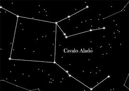
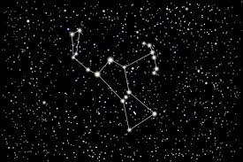
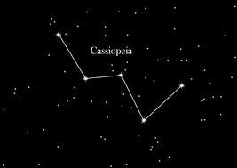
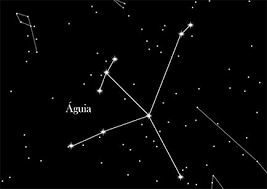

Ursa Maior

|
Uma das constelações mais famosas do hemisfério celestial norte, também é conhecida em outras partes do mundo como O Arado; |
 |
É uma constelação de forma similar à Ursa Maior, porém, reduzida; |
|  | Essa constelação recebeu o seu nome após o mito grego do cavalo alado; |
|  | A constelação de Órion fica no equador celeste, é formada por estrelas muito brilhantes como Betelgeuse; |
|  | Na mitologia grega, Cassiopeia era uma rainha etíope que comparara sua beleza à beleza das Nereidas e, por isso, fora castigada; |
 |
É uma constelação do hemisfério celestial sul, sua estrela mais brilhante é Sirius: a estrela mais brilhante do céu noturno; |
|  | A águia é uma constelação do equador celeste, essa constelação representa a águia que carregava os raios de Zeus na mitologia grega; |
 |
Andrômeda era filha da rainha Cassiopeia, de acordo com a mitologia grega; |